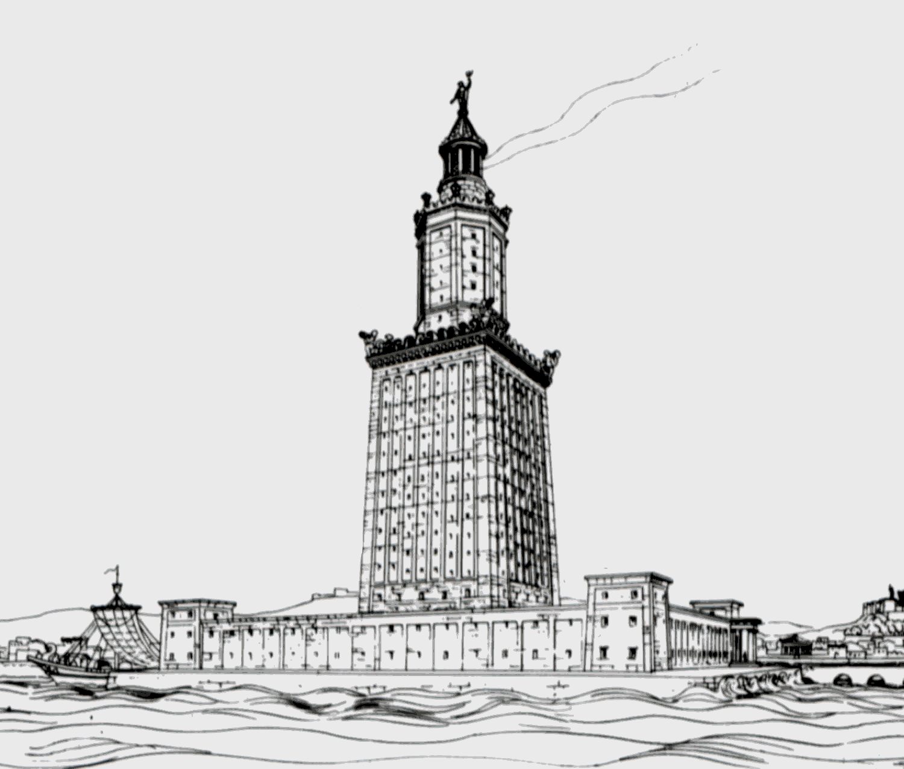

🏛️ Pharos CTF - Fyrtårnets Mysterie
Velkommen til den første udfordring! Du står over for et mysterie omkring et af verdens syv vidundere - Pharos-fyrtårnet i Alexandria.
💡 Hint: Billeder kan indeholde mere information end det øjet kan se. Prøv at undersøge alle detaljer i dette billede...

🔍 Opgave: Find metadata-informationen i dette billede og indtast flaget i formatet CTF{...}